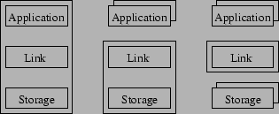

...turning right on Future Avenue. This article adds some historical and architectural perspective on the world of hypermedia and what motivated its pioneers. The idea of hypermedia predates the World Wide Web by some forty-five years, so this article starts by describing their work. No one correct definition of the term hypermedia exists, but the article will supply a couple of possible definitions derived from the ideas of the pioneers.
Afterwards, four major steps in the architectural evolution of actual hypermedia systems are described. When reading that part, keep in mind how software has generally evolved (away from a centralistic and toward a more modular design). Not surprisingly, this is also reflected in the development of hypermedia systems.
In the mid-forties the accumulated knowledge of mankind was growing rapidly. This made it exceedingly difficult for people to store and retrieve information in an efficient and intuitive manner. Bush [1] realized the problem of ``information overload'' and came up with a visionary solution for storage, organization and retrieval of information. He devised a mechanical device that would work by the same principle of associative indexing as the human brain and especially the human memory. The machine, called the Memex (short for Memory extension), made Bush a pioneer within a field later to be known as hypertext when dealing with text, and hypermedia when mixing several kinds of media. Today the terms hypertext and hypermedia are used interchangeably.
The principle of hypertext is a well known concept in literature. At the same time as one reads linearly through a text it is often possible to jump to footnotes, annotations, or references to different materials. Bush imagined that parts of the text could be touched; thereby leaving the linear way of reading and be taken directly to the footnote, the annotation, or to some other material. This way of reading leans upon a possible definition of hypertext as a paradigm for managing information [2]. Where physical references can be difficult, or even impossible, to follow, because the source referred to is unavailable to the reader, i.e. an article or a book, with electronic hypertext it becomes possible to gather a corpus of information and radically change the way a document is read or accessed. One could take this idea one step further and enable the reader to add new links between different documents, add comments to the links, or parts of the document itself.
It was Bush's vision that the Memex would make all these things, as well as a couple of others, mechanically possible. Nowadays, of course, what probably come to ones mind when reading the previous paragraph is the World Wide Web [3] and maybe Bill Gates' vision in the mid-nineties of ``information at your fingertips'' [4]. The Memex in contrast would store information on microfilm within the machine, but the principle remains the same. The documents stored in the Memex were to be linked together using associative indexing as opposed to numerical or alphabetical indexing. Using associative indexing, accessing data would become more intuitive for the user of the machine. Another definition of the term hypertext could then be a way of organizing information associatively [2]. Where associations in the brain become weaker as a function of time and the number of times the association is used to retrieve information, associations between documents in the Memex would retain their strength over time.
Both previous definitions of the term hypertext are concerned with navigation or a way of navigating through a corpus of information. The Memex can thus be thought of as a navigational hypermedia system, allowing its users to jump between documents adding to the reading experience. This changed experience could form the basis of yet another possible definition (or a broader version of the previous one) of the term hypertext as a non-linear organization of information [2].
Engelbart read Bush's article in the late-forties, but some fifteen years had to pass before the technology had reached a sufficient level of maturity for Engelbart to develop the world's first system utilizing Bush's concept of hypertext. NLS (oN-Line System) supported (1) the user in working with ideas, (2) the creation of links between different documents (in a broad sense), (3) teleconferencing, (4) text processing, (5) sending and receiving electronic mail, and finally enabled (6) the user to configure and program the system. This was something unheard of at that time. To better and more efficiently make this functionality available to the user, the system made use of some groundbreaking technologies for its time. Among other things Engelbart invented something akin to the mouse to enable the user to point and click on the screen, and a window manager to make the user interface appear in a consistent manner. The hypertext part comprised only a small part of NLS's overall functionality, whose major focus was on providing a tool for helping a geographically distributed team to better collaborate. Today, this kind of software is often referred to as groupware.
The user interface was revolutionary and far ahead of its time for computer users at all levels. Previously, most programmers interacted with computers only indirectly through punch cards and output from a printer. NLS, as a whole, served as a source of inspiration for systems to come, and inspired Apple in the development of the graphical user interface in the early eighties.
Like Engelbart, Nelson was inspired by Bush's early article [1]. But, unlike Bush and Engelbart, Nelson came from a background in philosophy and sociology. In the early sixties, he envisioned a computer system that would make it possible for writers to work together writing, comparing, revising, and finally publishing their work electronically.
Nelson's Xanadu has never really moved beyond the visionary stage, although a release of the Xanadu system has been announced on several occasions. It is hard to define exactly what Xanadu is, as it is not so much a system in itself, but rather a set of ideas that other systems may adhere to. The name stems from a poem by British writer Coleridge, who used the word Xanadu to denote a world [10] of literary memory where nothing would be forgotten. And indeed, one of the ideas behind Xanadu was to create a docuverse: a virtual universe where most of the human knowledge is present. It was also Nelson who coined the term ``hypertext'' in the mid-sixties, although his definition was to be understood in the broad sense covering both hypertext and hypermedia.
Another one of Nelson's ideas was a special way of referencing other documents (or parts of them), such that a change in the aggregated document would automatically propagate to the composite document; copying by reference or creating a virtual copy as Nelson put it. This way an author may charge money in return for providing and keeping the authors part of the overall document up to date. To some extend, this idea resembles that of todays deep links, although this concept has spawned some controversy on the copyright issue, an area that Nelson's virtual copy mechanism was to prevent in the first place. Many of the original ideas from the Xanadu project eventually managed to find their way into the World Wide Web and other hypermedia systems.
When describing the architecture of different kinds of hypermedia systems, three components are always present. The components and their purposes are briefly described below to better express why the evolution from monolithic to component-based systems have taken place. Even the earliest hypermedia systems made use of a classic three-tier model, with the application layer on top taking care of presenting information to the user. Below this layer is the link layer, that makes up the model of the system and takes care of managing structure and data. It is the associations and the information needed to represent these associations that is termed structure. Data, on the other hand, refers to the actual content of a document. Finally, the storage component takes care of storing information ranging from just the structure to both structure and content of the documents, depending on the system.
The development has happened in evolutions where, for each new
generation, some functionality previously part of the core of the
system has been factored out into its own component (Figure
![[*]](misc/holm/crossref.png) , bounding box represents components that are
part of the core of the hypermedia system). The description of
architectures stems partially from [5].
, bounding box represents components that are
part of the core of the hypermedia system). The description of
architectures stems partially from [5].
The dominant architecture among early systems was the monolithic one
(Figure , on the left). All three layers were
contained within one logical process, although this division was
invisible to the user. A monolithic system is considered a closed
system in that it neither publishes an application programming
interface (API) or a protocol for describing how structure and data
are to be stored. This made it pretty much impossible for other
systems to communicate and exchange data with the monolithic
system. Even basic functionality, such as editing information stored
in the system was managed by internal applications, only supporting a
few data format. So, before one could work on existing data they had
to be imported. This made it impossible to, say, directly store a
document created in a word processor in the monolithic system. At
least, not before the content of the document had been copied into the
internal editor and saved.
The file formats supported by the systems were limited to what the developers found useful. If you were to import the contents of a document created in a word processor, special formatting (part of the text made bold, or a change in the choice of font etc.) would be discarded. This puts the user in a dilemma: If hypertext functionality was to be fully utilized, it happened on the expense of abandoning ones powerful and familiar application environment in return for using internal applications of a hypermedia system. A far from ideal solution, because designers of hypermedia systems are specialists in developing hypermedia software, not word processing or other kinds of software.
Along with the import problem came a related problem: The system is limited in the number of data formats it can create associations between. Both documents, or ends, of the association have to reside within the system boundary; that is, stored within the monolithic system. Export of data from the system was also far from straightforward, because the systems made use of their own internal format for storage; a format rarely supported by contemporary hypermedia systems, causing information to be lost during the export process as well.
Despite these disadvantages, monolithic systems were widely used in the eighties. Maybe they owe a part of their success to the fact that other applications used in that period were not too keen on exchanging data and communicating with each other neither. Examples of monolithic hypermedia systems are KMS [2,6], Intermedia [7], Notecards [8], and to some extend the Microsoft Winhelp system used to generate Windows help files. Although, strictly speaking, the Microsoft Winhelp system and a number of other help systems have a different primary use than traditional hypermedia systems, they nevertheless make use of hypermedia functionality.

|
The description of monolithic systems revealed a number of
shortcomings. As a solution to some of these problems the user
interface component was moved out of core of the system and into its
own process (Figure , in the middle. With the
shifted rectangles indicating that a number of applications may now
access the hypermedia system). Client/server hypermedia systems come
in two flavors: The link server system (LSS) with its primary focus on
structure; that is the associations between documents, and the
hyperbase management system (HBMS) focusing on structure as well as
content.
From a software point of view the client/server based hypermedia systems are open in the sense that they publish a protocol and an API for applications to use. If an existing application was to offer hypermedia functionality to its users, it would have to make use of these protocols and API's. In the hypermedia world, however, the definition of openness differs from the general definition. A hypermedia system that requires the application to make use of a specific format for specifying both structure and data is considered a closed system, even if it publishes protocols and API's. An open system, on the contrary, is one that only specifies a format for structure. By not imposing a particular format on the actual content itself, an open system is able to handle a lot of different data formats and create associations between types of data created by various applications outside the hypermedia system.
From the general definition of openness it follows that the HTTP protocol of the World Wide Web is an open protocol in that it specifies a number of messages to be exchanged between the client and the server and the expected responses. However, the structure is embedded within the HTML document as a number of hrefs and other tags specifying the structure. The implication of this is that special applications (browsers) are required for parsing HTML files looking for hrefs (and other tags). That is why the World Wide Web is a closed hypermedia system when subjected to the hypermedia definition of openness, and that is why, in a client/server system, there can be any number of applications making use of the core system, with information stored on the server.
Other systems, on the contrary, does not impose a particular format on the content of the documents. However, they still require the source code of the application to be modified to make calls to some API. So, the client/server based systems from the early nineties solved a number of problems present in the monolithic systems by not making the application component an integral part of the hypermedia system. An example of an LSS based system is Sun's Link Service [9], while the World Wide Web [3] is an exemplification of a HBMS system, storing documents as part of the system as files in a file system.
The OHS is a further development of the client/server concept, and
therefore OHS's and client/server systems have a lot of features in
common. Where client/server systems could be classified in terms of
LSS and HBMS, an OHS is typically a descendant of one of these. OHS's
are only made up of the link component (Figure
, on the right), and is therefore often
referred to as middleware in the sense that (1) the component contains
functionality to be used or shared across a range of applications, (2)
it works across different platforms, (3) it may be distributed, and
finally (4) it publishes protocols and API's. An OHS is
distinguishable from a client/server system in that there is no
central storage as storing documents are no longer part of the core of
the system.
Because data is stored separate from structure it is possible to support associations between just about any data format, i.e. text, HTML, and graphics etc. When structure associated with a document is requested by an application, it is send from the link service to the application and applied to the data. This way a greater number of applications can interact with the system, as they no longer have to make use of a specific protocol for storing data, i.e. HTML on the World Wide Web. Practically speaking, the structural information may consist of a number of attribute/value-pairs, where the number of attributes vary depending on the type of data. For an image, coordinates may be specified, whereas for textual data an offset may be sufficient.
OHS's solved some of the problems introduced by the monolithic and the client/server systems, but are far from ideal. Every OHS defines its own protocols and API's, and not all OHS's support the same functionality. Descendants of LSS systems typically allow only for associations to be created between already existing documents, while descendants of HBMS systems, in addition to the LSS feature mentioned above, may also include content related functionality such as version and concurrency control. The result is that (1) an application written with a specific OHS in mind, will not work with another system, (2) because of the different protocols and API's, stored information cannot be shared across different systems, (3) because of the lack of a common standard specifying a minimal protocol or API, every system implements its own API, making individual systems unable to communicate with each other. Furthermore, although quite a few other domains exist, most OHS's are designed with navigational hypermedia in mind. An example of an OHS descending from LSS is Microcosm [12], while an HBMS descendant is Hyperform [11].
Component Based Open Hypermedia Systems (CB-OHS's) are very similar to ``simple'' open hypermedia systems. However, as the name implies, there is a greater focus on the notion of components. Besides the component issue, the thing to note here is that this kind of system supports several kinds of structural domains, and may store its data at different locations. So, it differs primarily from the OHS in the link component.
Compared to the OHS's, the first generation CB-OHS's (1G CB-OHS) tried to solve the problem of lack of cooperation between individual components by introducing standards. So far there is an agreed upon standard specifying how the application and the structure service in the navigational domain should communicate, and further standards are underway. Another goal of the 1G CB-OHS is that it should be possible to extend the system to support other domains as well, simply by adding a new structure service (that is, a new component) to support the new domain, i.e. the taxonomic or the spatial domains. Alternatively an existing component could be modified to handle several domains as was the case with the OHS. Compared to the CB-OHS, an OHS can be though of as comprised of just one structure service. However, modifying an existing component this way is not a very clean and flexible solution. But common to all structure components is that they access the storage component through the same API. The implication of this is that a new structure service will therefore automatically ``inherit'' mechanisms for versioning, concurrency control or what else the storage component has to offer.
For the 1G systems to meet these goals the structure service makes a
number of protocols and API's available to its clients (the browser or
whatever application that wish to communication with the hypermedia
system. Because the system adheres to the hypermedia definition of
openness it can essentially be any type of application). Figure
shows an architecture with three structural
components, each representing a structural domain. Among other things
a structural domain deals with the special abstractions used,
i.e. node, link, and context within the navigational domain. As
described in the previous section, the special abstractions within
every domain makes it a good candidate for a new component instead of
intermixing the functionality with an existing one.
The structure component communicates with the storage component (called the hypermedia store), but because the components no longer exist within a single process boundary some additional work has to go into the communication process. Local communication can be handled by some form of Interprocess Communication (IPC) or Local Procedure Call (LPC), but across a network things get complicated. To support network communication a lot of work went into the development of custom component frameworks. This is also the main difference between the first and the second generation of CB-OHS's. Where the 1G CB-OHS made use of custom frameworks, the 2G CB-OHS makes use of general frameworks like COM or CORBA. The developer can then focus on developing hypermedia functionality and ignore the lower level details of the communication process. The problem with integrating existing application still exist though, because modifying an existing application to make use a component framework is generally a non-trivial task.
The definition of standards, such as the one between the structure component and the application, is a result of the work of the Open Hypermedia Systems Working Group (OHSWG). As standards evolve they will benefit users at all levels [13]. The end user will come to think of hypermedia functionality in the same way as with cut, copy, and paste today [12]; as something that is a natural ingredient of every application. At some point in the future it might be possible to add menu items such as ``Start link'' and ``Finish link'' etc. to every application, and implementing them will be no more difficult than todays cut, copy, and paste. For producers of content, common standards will also come in handy, as documents and structures may be reused across platforms and hypermedia system boundaries. Finally, besides the editing functionality previously described, the developer will be able to focus on what a standardized system offers, no matter of the actual system, as long as it adheres to agreed upon standards.
Hypermedia systems have emerged from a need for organizing an ever growing pile of information better than by simply storing things alphabetically. Since Bush described his thoughts of a machine that functionally resembled the way the human memory works, the knowledge of mankind has doubled many times, and the World Wide Web has replaced many of the earlier hypermedia systems and made quite a bit of the visions of the pioneers come true. However, at the same time, it is worth noting that the World Wide Web is a very simple system compared to earlier as well as contemporary systems. But this simplicity itself might very well be the main reason behind its success in delivering hypermedia functionality to the general public.
The architecture has undergone a gradual development much like the architecture of any other software. The monolithic systems were not too keen on acknowledging the existence of other systems. Since then, things have changed radically, and the systems of today are designed to import and export data from and to a variety of formats. The common denominator for import and export is often W3C standards such as SGML or derivatives like XML or HTML. Add to this the ability of systems to better allow reuse of functionality across different systems.
It is also worth noting that HTML, the basic data format of the World Wide Web, the dominant hypermedia system in use today, keeps structure and data together and therefore the World Wide Web is not considered open in the hypermedia sense. Several (successful) attempts have been made to make the World Wide Web a (component based) open hypermedia system. All in all the area of hypermedia is a very large area of ongoing research and there is a lot of elaborating material available on the systems and the concepts briefly touched upon in this article.
Copyright (C) 2002 Ronnie Holm. Please email me and let me know where this article is being used. Verbatim copying and redistribution of this entire article is permitted in any medium if this notice is preserved.